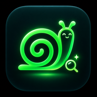

Private file finder · v1.0
Find files with Snail
Read-only search. Snail checks your private file catalog when you ask. Search results stay in this browser page; they aren't added to Aida's memory or sent to an LLM.
The first search verifies all private index segments. File paths are addresses, not guaranteed live links. Use Copy address to keep an exact location.
Connect Google Drive to search.